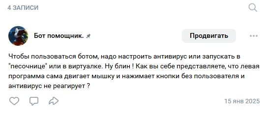
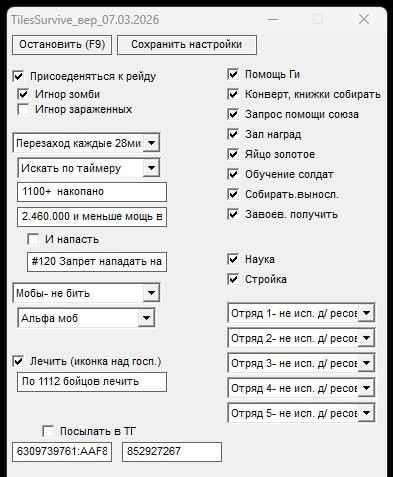

Рабочий инструмент от автора • поддержка в ВК
Устанавливаем Блюстак (bluestacks.com), запускаем там игру как в обычном телефоне.
⬇️ СКАЧАТЬ БЕСПЛАТНО

https://drive.google.com/open?id=1d0SHcxVyEN2PylGY502..
-Рудник: выбираем время через сколько на него пересаживаться. Например 28мин+-, чтобы добывать под щитом.
Лечить: жмёт иконку над госпиталем. Можно выбрать по сколько бойцов лечить (например по 2000), запрашиваем момощь ги на лечение
-Помощь Ги: нажимает помочь рандомно раз в несколько минут (после нажатия, в логе пишет сколько ещё не будет нажимать)
-Конверт, книжки собирать: собирает конверт над "Пост разведки" икнижки над "Академия героев"
-Зал наград: периодически забираем награды: красная иконка внизу слеа, награды за походы
-Собирать выносливость: собирать бесплатную "выносливость шефа", когда она появляется
-Завоев. получить: забираем "ящик приключения" в "приключения героев"
⬇️ СКАЧАТЬ БЕСПЛАТНО